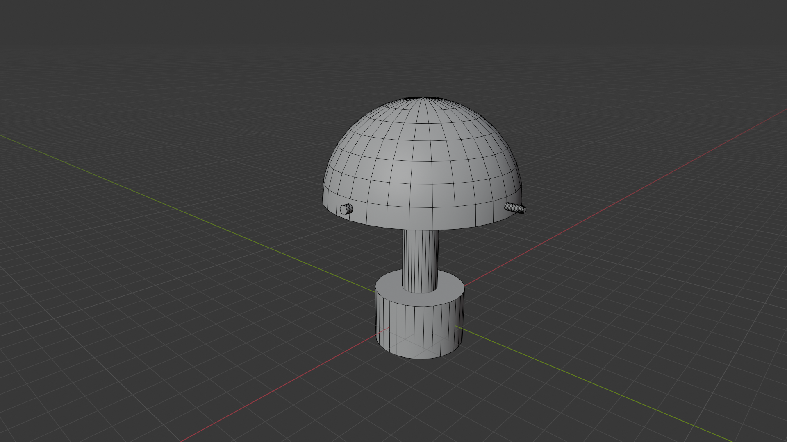

Bei diesem Projekt ging es darum, eine Lampe aus dem IKEA‑Sortiment so realitätsnah wie möglich in 3D nachzubauen. Dafür wurde das komplette Modell selbst erstellt – inklusive der charakteristischen Formen, Proportionen und Details. Besonders wichtig war die Material‑ und Texturfindung, damit die Oberfläche, das Metallder Lampe möglichst authentisch wirken. Zusätzlich habe ich ein Wireframe‑Render erstellt, um den Aufbau und die Modellierung sichtbar zu machen. Das Projekt zeigt meinen Fokus auf saubere Modellierung, realistische Materialien und eine klare, reduzierte Präsentation.
